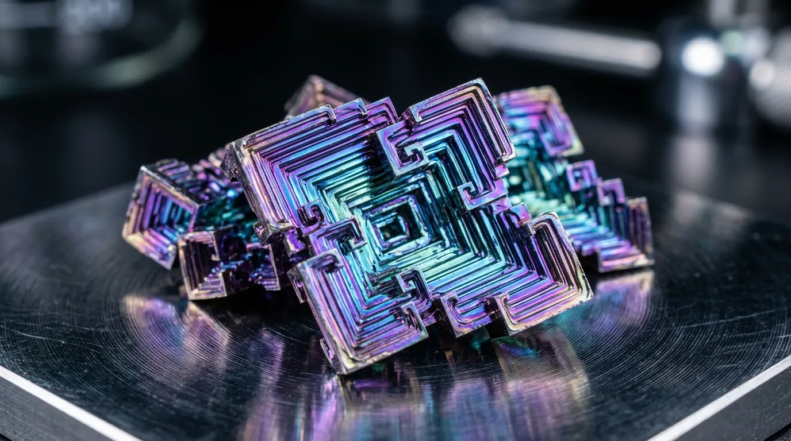

The Commercial Ingot & Slab Registry
Our commercial registry maintains four standardized dimensions of 99.995% purity bismuth-tin diamagnetic isolation plates. Each plate is cast under argon pressure to prevent atmospheric contamination, slow-cooled over 72 hours to maximize crystal hopper formation, and subsequently diamond-ground to a surface flatness tolerance of less than 3 micrometres.
The entry-level specification provides an 8 kilogram mass ideal for isolating individual optical components or sensitive analytical scales. The intermediate plate scales the mass to 31 kilograms, suited for compact vinyl transcription decks. Our flagship Solway 420 plate delivers 58 kilograms of damping mass, designed as a direct plinth replacement for master reference turntables. Finally, the extreme-scale foundation slab offers absolute mechanical isolation, intended for laser interferometry and electron microscopy installations where environmental acoustic noise floor mandates absolute zero transmission.
Reserve Ingot PlateTurned Turntable Platters & Sub-Chassis Blanks
Beyond static surface plates, the foundry operates a precision turning division dedicated to dynamic rotational components. We supply 12-inch standard bismuth platters machined from solid cast billets, designed to entirely eliminate motor hum and mechanical groove feedback in high-end analog transcription. Each platter incorporates a precision-pressed center spindle bushing manufactured from oil-impregnated phosphor bronze, ensuring frictionless rotation while maintaining total electrical continuity for grounding stray static charges.
The massive rotational inertia generated by the heavy bismuth casting neutralizes micro-speed fluctuations inherent in belt-drive or direct-drive motor architectures. To complete the mechanical isolation chain, we offer complementary sub-chassis blanks and pre-drilled armboard adapters optimized for both standard 9-inch and 12-inch transcription tonearms. These dedicated armboards ensure the stylus tracks within an acoustic vacuum, perfectly decoupled from chassis resonance.
Custom Pour Castings & Machining Tolerances
For independent CNC machine shops and metrology toolmakers commissioning custom pour castings, strict adherence to specific machining parameters is required. Bismuth is a highly crystalline, relatively soft, yet brittle metalloid. Standard aggressive milling techniques utilized for aluminium or mild steel will inevitably cause surface fracture and edge spalling across the crystalline grain boundaries.
We mandate the exclusive use of sharp, uncoated carbide tooling featuring a zero degree or slightly negative rake angle. This geometry shears the material cleanly without inducing sub-surface micro-cracking. High spindle speeds combined with very low feed rates (typically under 0.05 millimetres per tooth) are required to achieve acceptable surface finishes.
Furthermore, flood coolant must be employed continuously to prevent localized work hardening and thermal smearing of the low-melting-point alloy. When tap drilling, utilize roll taps rather than cut taps to compress the thread profile into the crystalline matrix, thereby increasing localized mechanical strength.
Direct Freight Order Console
All high-mass orders are processed through our direct commercial freight console. Procurement terms mandate cleared funds via BACS transfer prior to dispatch from our Cumbrian facility. Utilize the interface below to calculate total pallet deadweight and select the appropriate regional freight destination. International air-freight quotations for the 122 kilogram plates require direct consultation with our logistics superintendent to verify structural load limits.